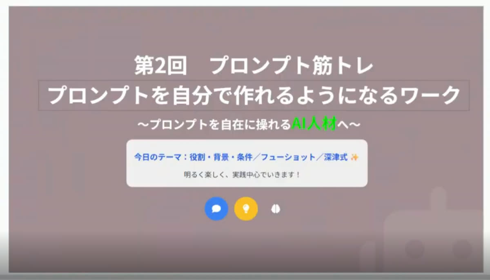
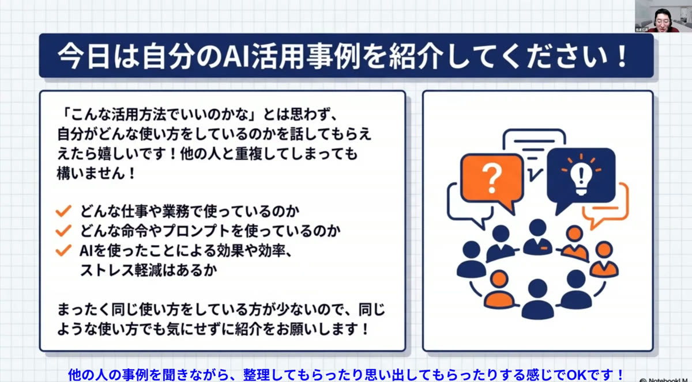
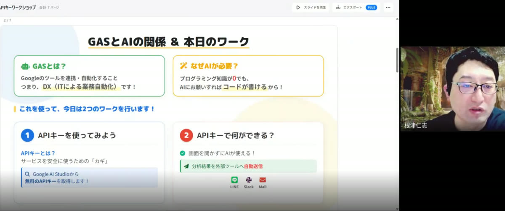
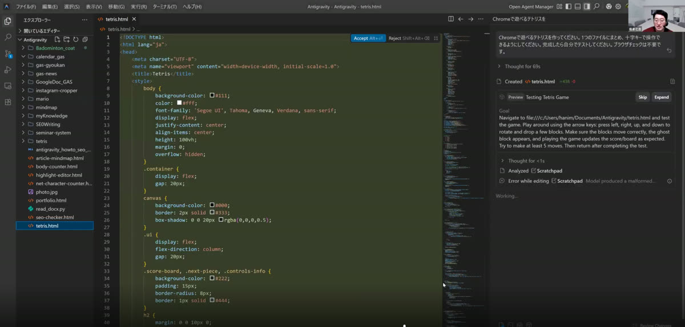

01 — みんなで学ぼう
一人の「わからない」が、
みんなの学びになる。
AIの使い方や実践中の疑問を、Zoomで持ち寄ります。自分の質問はもちろん、仲間の相談からも「そんな使い方があったんだ」という発見が生まれます。
- 初歩的な疑問から、仕事での使い方まで相談
- 仲間の悩みを、自分の仕事にも置き換えて考える
- 学んだことを持ち帰り、実際に試してみる
「AIを学びたいけれど、何から？」という方も、その疑問から。
AIを仕事に活かす、少人数コミュニティ
月2回のZoomグループコンサルで、
AIの疑問も、実践の気づきも持ち寄って、
仲間と仕事への活用・収益化を目指します。
＼ 何から学ぶ？の段階でも大丈夫 ／
参加プランの相談もできます。LINE登録時の決済はありません。

START WHERE YOU ARE
ライトザライトには、一緒に試し、疑問や実践を共有できる仲間があります。「何から学べばいい？」という最初の疑問から、持ち寄ってみませんか。
OUR GROUP CONSULTING
ライトザライトの中心は、Zoomグループコンサル（グルコン）。
AIを一緒に学び、実践を共有し、次の仕事につなげるための時間です。
ONLINE GROUP SESSION
平日 21:25〜1回 約90分
リアルタイムで参加できない日も、
アーカイブで学べます。
01 — みんなで学ぼう
AIの使い方や実践中の疑問を、Zoomで持ち寄ります。自分の質問はもちろん、仲間の相談からも「そんな使い方があったんだ」という発見が生まれます。
「AIを学びたいけれど、何から？」という方も、その疑問から。
02 — 実践を共有しよう
「この作業にAIを使ってみた」「ここでうまくいかなかった」。それぞれの仕事や経験を共有し、自分だけでは思いつかなかった活用法に出会います。
完成した成果だけでなく、試している途中の気づきも学びのきっかけに。
03 — 仲間と、稼ぐ力へ
自分の業務の時短から、提案やAI活用支援への挑戦へ。グルコンで仕事への活かし方を相談しながら、仲間とできることを広げていきます。
個別に提案や案件の進め方を相談したい方には、面談付きプランもあります。
BETWEEN SESSIONS
グルコンの合間の学びも、支えます。
予習・復習や、参加できない日の学習に。どの動画を見るか迷ったら、初心者向けの視聴案内を参考に進められます。
Slackは質問や交流に使うチャットツール。試してみたことや疑問を共有し、次のグルコンにつなげられます。
LEARN · CONNECT · WORK
ライトザライトは、学んだ先も一緒に進む「事業者チーム」です。
基礎を知る。
自分の仕事で使ってみる。
グルコンで使い方を学び、疑問を相談。仲間の質問もヒントにしながら、AIを実務に使う経験を増やします。
グルコン・基礎講座・アーカイブ一人の気づきが、
みんなのヒントになる。
少人数の仲間と実践例や疑問を共有。交流会や経理の仕訳会でも、仕事の悩みを持ち寄れます。
Slack・交流会・実践の共有できることを増やし、
稼ぐ機会を広げていく。
自分の業務の時短から、提案や案件への挑戦へ。チーム内の受発注やAI活用支援の活動につながる機会があります。
チーム内受発注・AI活用支援仕事の受注や収入を保証するものではありません。経験や取り組みに応じて、目指すことを広げていきます。
企業の生成AI活用には、専門人材やノウハウの不足という課題があります。現場の仕事を理解し、AIを使って改善できる力が求められています。
出典：帝国データバンク「生成AIに関する企業の動向調査（2026年3月）」MEMBER STORIES
20代から60代まで、さまざまな仕事の仲間が参加。
メンバーに起きている変化をご紹介します。
NotebookLMの活用方法が分かり、セミナー資料作成時間が1/10になりました。ここまで効率が上がるとは想像していませんでした。
AIの使い方に迷いがなくなり、作業時間が1/3になりました。本業の整体に集中できる時間が増えて、本当に助かっています。
60代でついていけるか不安でしたが、丁寧な伴走のおかげでしっかりついていけています。個別面談で疑問を解消できるので、置いてかれることなく進められています。
在籍メンバーの実例です。成果には個人差があり、同じ結果を保証するものではありません。
自分の仕事でも、活かせそう。
そう思ったら、まずはご相談ください。
＼「自分の場合は？」も聞けます ／
参加についてLINEで相談するTHE PEOPLE BEHIND YOUR PROGRESS

FOUNDER & MENTOR
AIコンサル・講師・Webディレクター
AIを学んでも、実務や収益につながらず迷ってしまう。そんな悩みを、現場で何度も見てきました。
だから、質問できる相手と、実践を共有できる仲間がいる場所を。一人ひとりの学びを、チームで価値を届ける活動へつなげていきます。
実際の勉強会・実践ワークの様子



CHOOSE YOUR PACE
みんなで学ぶグルコンと、日々の共有が基本。
自分の課題を深めたい方は、個別面談を追加できます。
月2回のグルコンで学び合い、
仲間と実践・仕事につなげる。
¥5,500 / 月
＼ 残り6名／定員20名の少人数制 ／
このプランをLINEで相談する個別Zoom面談は含まれません。
自分の課題を、
月4回の個別面談で一緒に進める。
¥21,500 / 月
面談付きプランを相談する個別面談は1回あたり4,000円相当。月額21,500円からコミュニティ相当額5,500円を差し引き、4回で計算。
単月から参加OK。最低利用期間・違約金はありません。
解約は希望月の25日までにLINEまたはSlackでご連絡ください。翌月分以降の請求は発生しません。当月末まで利用でき、日割り返金はありません。
AIツールの有料機能を使う場合、その利用料は別途必要です。お支払いはStripeを利用したクレジットカード決済です。
少人数で、相談しやすい場を。
定員20名。募集状況はLINEでもご確認いただけます。
在籍14名／残り6名募集状況の更新日：2026年7月29日
コミュニティ参加時には「根津式SEO AIライティングプロンプト最新版」も利用できます。
HOW TO JOIN
内容を確かめて、納得してからご参加ください。
学びたいことや疑問をお聞かせください。この段階で決済はありません。
内容をご確認いただき、ご入会の意思が固まってからお手続きへ進みます。
Slackに参加し、開催案内を確認。グルコンで疑問や実践を持ち寄り、合間はアーカイブでも学べます。
はい。初心者の方も参加できます。「何から学ぶ？」「仕事でどう使う？」という疑問を、グルコンやSlackで相談できます。基礎から学びたい方にはAI基礎講座や過去アーカイブの視聴案内もあり、個別面談付きプランでは基本操作から相談できます。
入会後、初心者向けのおすすめ視聴案内をご確認いただけます。案内を参考に基礎講座などから始め、興味や目的に合わせて実践のアーカイブへ進めます。すべての動画を一度に見る必要はありません。
はい。学習中の疑問はSlackで質問できます。試した内容や困っているところをお聞かせください。月2回のZoomグループコンサルでも相談でき、個別に進めたい場合は面談付きプランをご利用いただけます。
基本的な使い方やAIへの頼み方は、無料で利用できる範囲から学び始められます。取り組む講座や利用する機能によっては、有料プランや別途利用料が必要になる場合があります。AIツールの料金は会費に含まれません。必要な環境は学びたい内容に合わせてご相談ください。
月2回、平日の夜21時25分から約90分、Zoomでオンライン開催します。AIの使い方や実践中の疑問、仕事への活かし方などを相談できます。固定の曜日ではありません。
はい。勉強会はアーカイブで視聴できるため、ご都合のよい時間に学べます。おすすめ視聴案内を参考に、自分のペースで進めていただけます。
コミュニティは月5,500円で、月2回のZoomグループコンサル・Slackでの質問や実践共有・アーカイブ・視聴案内などを利用できます。面談付きプランは個別Zoomで自分の課題を相談する時間が加わります。ライトは月2回、スタンダードは月4回、各50分の面談です。
Slackは、質問や交流に使うチャットツールです。招待後に使い方をご案内します。AIに関する質問、実践報告、情報共有、案件相談などに利用します。
はい、会社員の方も参加できます。初心者から実務経験者まで、20代〜60代のWebライター・広報PR・整体師・Webディレクターなど、さまざまな方が在籍しています。今の仕事にAIを活かしたい方や、副業・将来の独立を考えている方もご参加いただけます。
AIを学び、仲間と実践を共有し、仕事にもつなげていく「事業者チーム」として活動する点です。チーム内の受発注や、AI活用支援への挑戦など、学んだ先の活動も目指しています。
資料作成時間の短縮や、AI案件の獲得、本業でAI研修を担当するようになった事例があります。成果は経験や取り組みによって異なり、同じ結果や仕事の受注を保証するものではありません。
LINEで詳細をご確認いただき、入会を決めてからお手続きへ進みます。お支払いはStripeを利用したクレジットカード決済です。初回は入会手続き時、2回目以降は毎月同日に自動決済されます。入会後にSlackへご招待します。
最低利用期間・違約金はありません。解約をご希望の月の25日までにLINEまたはSlackでご連絡ください。翌月分以降の請求は発生しません。当月末日まで利用でき、日割り返金はありません。詳しくは特定商取引法に基づく表記をご確認ください。
LET'S LIGHT YOUR NEXT STEP.
何から学べばいいか迷っている方も。
みんなで学び、共有し、仕事に活かす一歩を。